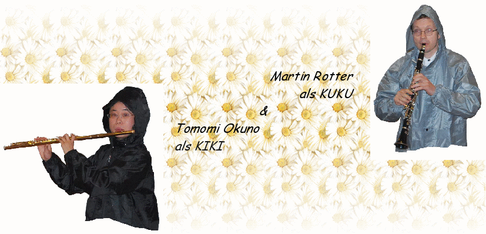

OperaMania da regalare !
Cercando il presente aniversario ?
Cercando un programma per bambini alla vostra nozze ?
Ormai ha avuto un teatro della opera alla vostra scuola...?
→ si puo prenotare la nostra operina ! prezzi & condizioni
Musica in gondola & maschera !
Divertitevi colla musica in maschera privatissima ! Kiki e Kuku fanno un concerto di carnevale veneziano esclusivo per voi, sia in palazzo, restaurante, bar, gondola, casa etc.... → contatto
Niente Orchestra, Cantanti, Regista, Direttore etc... OPERAMANIAesegue Opere con soli due interpreti !!!
Divertitevi con la musica strepidosa delle opere, composta da KIKI e KUKU come duetti per flauto e clarinetto, scherzi musicali, aneddoti, costumi e tante altre surprese !!
Le nostre fantastiche produzioni sono opere buffe, per esempio, Gioacchino Rossini: “Il Barbiere di Siviglia”, “La Cenerentola”, “Il Signor Bruschino”... adatte a tutti, adulti e bambini per tutte le occasioni, per esempio
-
compleanni
-
anniversari di nozze
-
eventi di lavoro ...

Corsi / Workshops
Suona un strumento e vorrebbe fare la sua Operina Piccola ?
Kiki e Kuku offrono corsi da studiare. Pregiamo di contattare.
Corso di musica con Kiki & Kuku
Stai cercando un ambiente tranquillo per fare musica e ispirare ?
oppure immergiti nel mondo della musica ?
Puoi prenotare un corso di musica particolare con Kiki e Kuku a Venezia ! →
ossia „L'inutile Precauzione“ ossia
„Il Barbiere
di Siviglia“
Commedia di
Pierre
Augustin Caron de Beaumarchais (1732-1799)
Musica
di Gioacchino
Rossini (1792-1868)
Luogo e tempo:
Siviglia,
Espagna, settecento
Il Conte Almaviva s'inammora della bella Rosina, che vive con il suo tutore, Dott. Bartolo, un vecchio farmacista. Almaviva non vuole essere amato per la sua ricchezza. Si presenta a Rosina come il povero Lindoro e per cui conquiste il cuore di Rosina. Ma c'e un problema – anche il Dott. Bartolo vuole sposarsi con Rosina. Le sue tante precauzioni sono eccessive e si confida solo con la sua attraente custode Marcellina. Il factotum della citta, il famoso barbiere Figaro è un amico di Almaviva. Il Dott. Bartolo è suo cliente. Ce la farà Figaro a portare l'opera a un lieto fine ?
Durata: 90 min (pausa incl.) ossia versione breve senza pausa 60 min
♪ L'elisir d'amore ♪
Commedia di Felice Romani (1788-1865)
Musica di Gaetano Donizetti (1797-1848)
Nemorino si innamorò
dalla bellissima Adina, che non è interessata a lui. Il dottore Dulcamara viene con una cura miracolosa. Prova anche le sue ultime invenzioni !
Durata: 90 min
♪ Il Clarinetto Magico ♪
ossia „La
Cenerentola“
Commedia di
Jacopo
Ferretti (1784-1852)
Musica di
Gioacchino
Rossini (1792-1868)
L'avaro Don Magnifico va ad una festa al castello colle sue figlie Clorinda e Tisbe. Ma non vuole portare la sua figliastra Cenerentola. Sentite la storia vera del racconto popolare e vedete come un clarinetto magico fa girare il destino !
Durata: 80 min (pausa incluso) ossia versione breve senza pausa 50 min
♪ Bolero nell'opera ♪
ossia „Il Signor Bruschino“
“
Commedia
di Giuseppe Maria Foppa (1760-1845)
Musica
di Gioacchino
Rossini (1792-1868)
Luogo e tempo:
Il castello di Gaudenzio, Francia, settecento
Sofia
e Florville sono inammorati, ma il tutore di Sofia, Gaudenzio, ha un progetto alternativo per la nozze di Sofia. Gaudenzio ha promesso la mano di Sofia al figlio del amico suo, il Signor Bruschino...
Durata: 30 min
♪ La conferenza degli animali ♪
di Erich
Kaestner (1899-1974)
Musica
di Coboflupi
(*1971)
Diritti riservati al Verlag für Kindertheater Weitendorf, Hamburg
Partecipate a una conferenza internazionale, dove si risolvono tutti i problemi del mondo con tanto umorismo...!
Durata: 100 min (pausa incl.) ossia versione breve senza pausa 45 min
♪ Gala d'Opera ♪
Degustazione di tesori d' Opera del Menu di Rossini.
Durata: 30 - 50 min
♪ Viaggio fuori dal Capello ♪
Tira un viaggio musicale con Kiki e Kuku fuori dal capello.
OperaMania
era creato di Tomomi
Okunoand Martin
Rotter in 2008a Oxford.
Tomomi
Okuno, „Kiki“ nata nel 1979 a Osaka in Giappone, diplomata nei Conservatorii di Osaka e di Vienna, suona il flauto classico moderno e inoltre si specializza in musica antica con il flauto traverso, frequentando diverse masterclass in Europa. Ha eseguito concerti con musicisti di Landesbühnen Sachsen, Staatskapelle Dresden, Nara International Music Academy.
Martin
Rotter, „Kuku“ nato nel 1968 a Klosterneuburg in Austria, diplomato nel Conservatorio di Vienna. Ha fondato il famoso “Glassscherben” quartetto, con cui diverte il pubblico con il „Pickssüße Hölzl“ (un piccolo clarinetto in Sol) suonando la musica dei fratelli Schrammel, tipica di Vienna.
I due artisti vi intrattengono anche con la musica del Rinascimento, del Barocco e della musica classica suonando strumenti storici, flauto traverso e clavicordo ...→ https://operamania.github.io/homepage/TC
-
“Solo due strumenti, in qualche modo è l'esperienza del mondo
musicale di un orchestra intera. Voglio che anche i miei studenti
ascoltino la vostra musica.“


 Person und Raum
Person und Raum